CART 498 · FALL 2026
Design Journal
A documentation of my design process.
Week 1 - Deciding Which Project to Choose
This week, I mainly compared the three proposed projects by looking at their design challenges and how interested I was in each one.
Artivault is more like an information management system. It mainly focuses on information presentation and organization. I think one of the main challenges would be how to structure, layer, and expand a large amount of information without overwhelming the user. Personally, I am not very interested in this project.
CornerSet is more like a mobile app, focusing on information presentation and user interaction. One challenge for me is that I do not have much experience with live music performance, so I may need to better understand the needs and situations of performers.
Bitten focuses on game UI, including information presentation, how players recognize important information, and game fairness. One of the main challenges mentioned in the lecture is that the project may require a large amount of visual asset creation. However, this is the project I am most interested in personally.
After considering both my personal interest and the difficulty of each project, I ultimately decided to choose CornerSet.
Week 2 – Design Pillars, Persona, User Assumptions, Features, and Wireframe
This week, I mainly worked on the Persona and User Assumptions, then used them to define the Design Pillars and List of Features, and finally created a simple Wireframe.
Based on the requirements provided by the fictional users, I decided to focus on performers first and created personas for them. I included their background, goals, motivations, and pain points because I believe these aspects are directly related to my later design decisions.
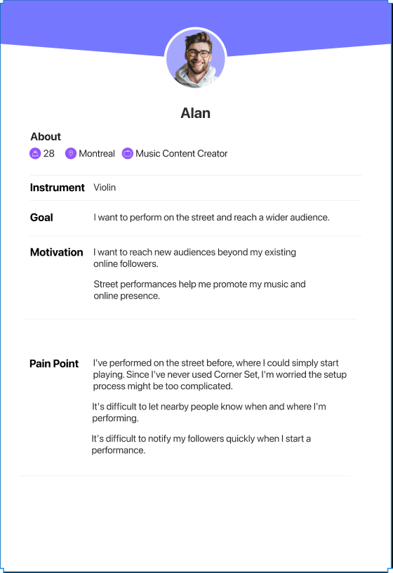
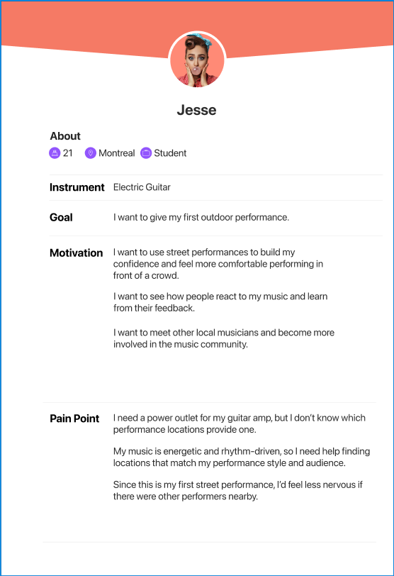
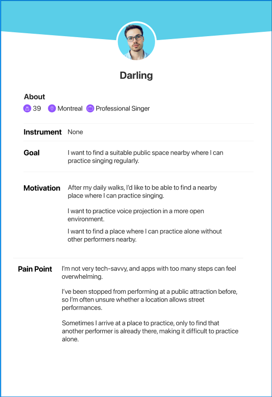
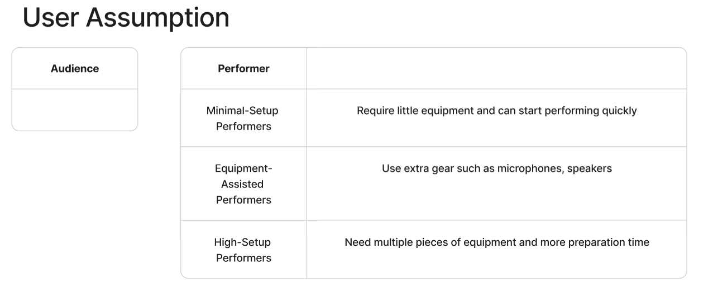
Based on the personas, I defined the Design Pillars, mainly focusing on ease of use and readability of information. I also created a List of Features based on the users’ pain points and the requirements provided by the fictional users.
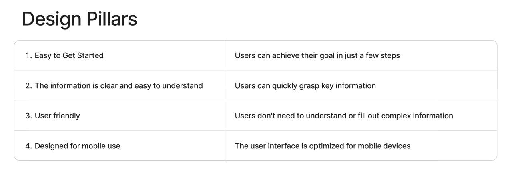
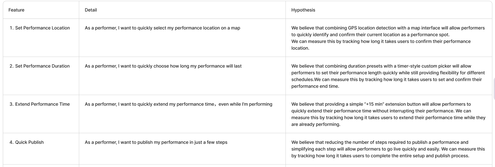
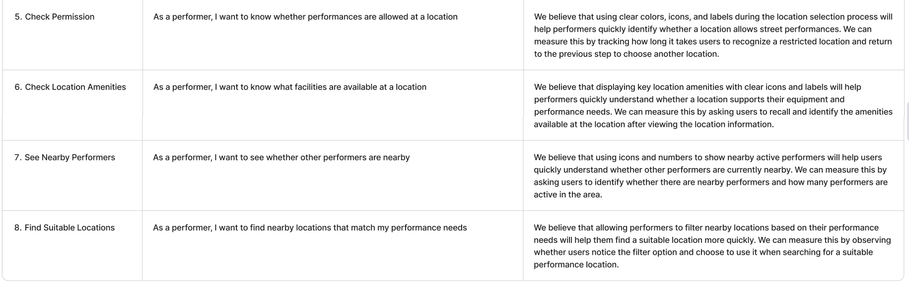
Finally, I used these features to create a simple wireframe. The purpose was to test how the information and interactive buttons would fit on a mobile screen, how the layout should be organized, and whether the overall structure was practical.
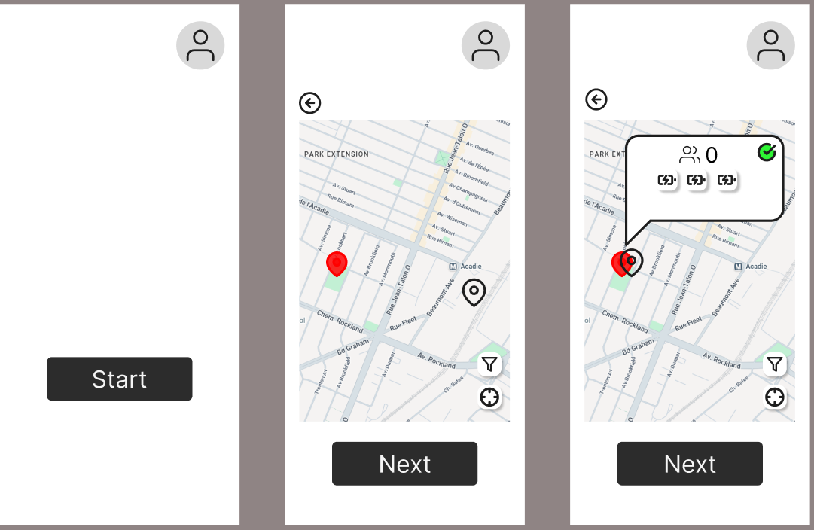
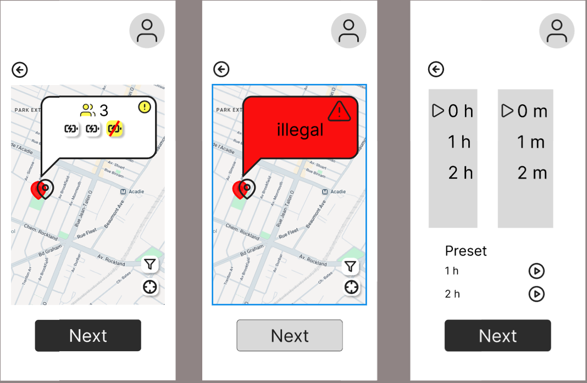
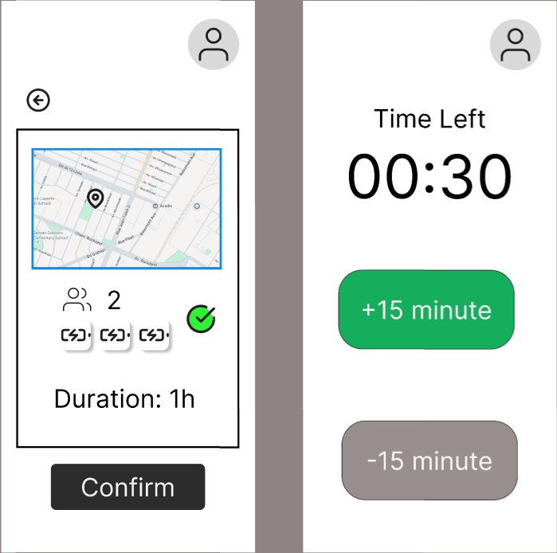
Week 3 - Iteration, Prototype, and Questionnaire
This week, I mainly reviewed the wireframes from last week based on the new requirements from the cilents. I identified which parts could remain and which parts needed to be modified or expanded. I then selected several features to test and created a prototype for next week's testing session. Finally, I created a questionnaire based on the goals of the prototype.
Iteration
I first broke down the new requirements from the production team. Instead of only looking at what features they requested, I also considered why they needed those features and what problems those requirements were trying to solve. One requirement directly affected my previous design: due to legal restrictions, the published GPS location could no longer display an exact location and instead needed to be shown as an approximate area. Other new requirements included the Current Tip Jar and an Offline State, where some core functions still need to work without an internet connection. While reviewing these requirements, I also developed some of my own questions. For example, I started wondering how the Current Tip Jar might affect a performer's behavior during a live set. After identifying these new requirements and questions, I reconsidered the layout of the Active Live Set interface and how different types of information should be prioritized and displayed.
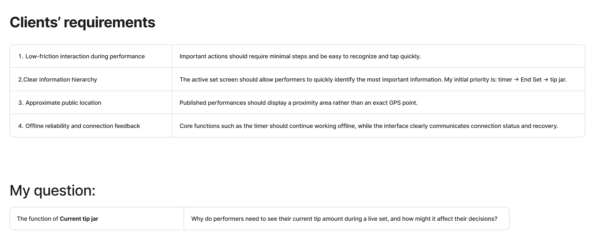
Prototype
Based on the requirements from both last week and this week, I selected two main areas to test in the prototype:
- Performance Setup Flow
- Active Live Set Interface
These two areas directly relate to the main requirements currently given for the performer side of the app. Other features I previously identified, such as filters, nearby performer information, and facility information, are not the main focus of this prototype. I want to first make sure that the main workflow can be understood and completed successfully before focusing on these secondary features. I then created the first version of the prototype based on these testing goals and the production requirements. This prototype is not designed to let users freely explore the entire app. Instead, it uses a more linear flow that guides users through a specific process. The purpose is to observe whether users find the process too complicated and whether the actions and information presented during the process are easy to understand.
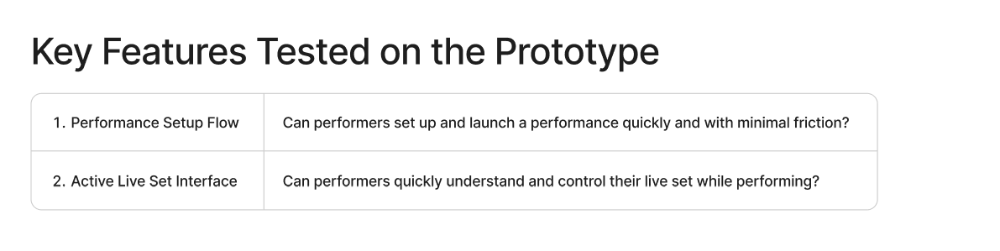
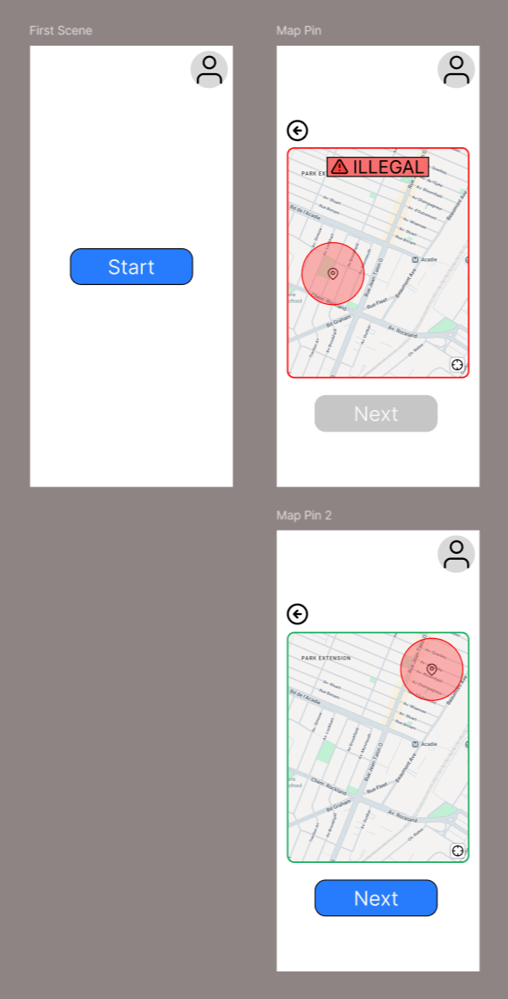
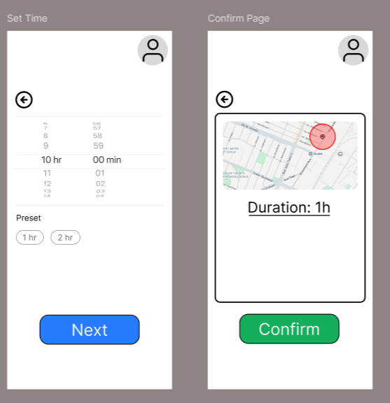
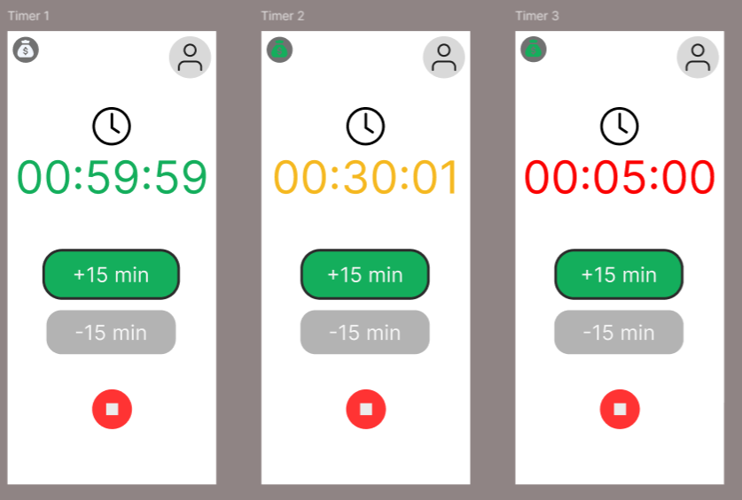
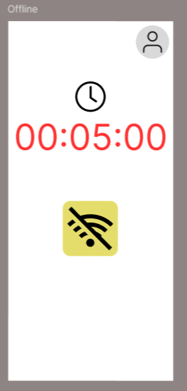
Questionnaire
Based on the prototype and the main features being tested, I created the first version of the questionnaire. The questions mainly focused on the complexity of the workflow and the readability of information. After completing the first version, I reviewed the lecture material about questionnaires again and realized that some of my questions were too broad. Even if users answered them, the results would not clearly tell me which part of the design needed improvement. For example: How clear was the information shown on the interface? Please rate it from 1 to 5. Even if a user gave a score of 1 or 5, I would still not know which specific information was clear or unclear. Because of this, I revised the questionnaire and created a second version with more specific questions. Each question now focuses on a particular interface element or interaction, making the results easier to connect to future design changes.
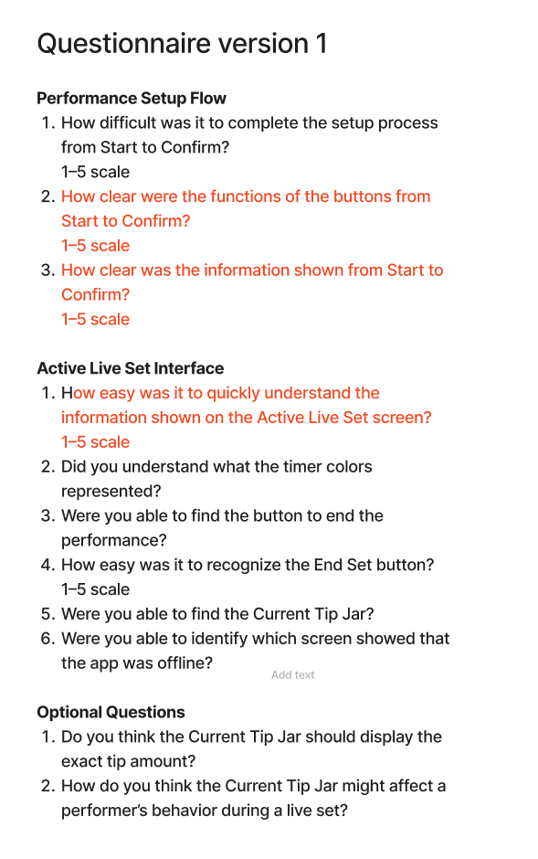
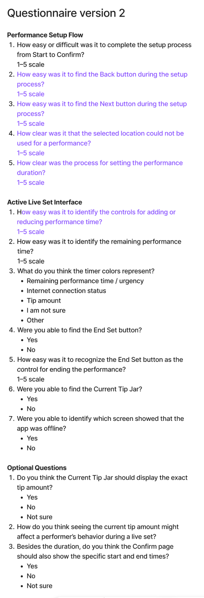
Design Changes and Ideas
1. Location Range Display When users confirm a performance location, the exact location will now be displayed as an approximate area. My understanding is that this requirement mainly exists to avoid legal issues rather than to make location information easier for performers or audiences to read. Because of this, I think the performer only needs to confirm that the selected location is correct. The size of the displayed area should be determined automatically by the system instead of adding another control for performers to adjust it manually.
2. Tip Jar Icon At this stage, I consider the Tip Jar to be an additional feature for performers. Although performers may change their behavior depending on the amount of tips they receive, I currently consider it to have a relatively low priority on the Active Live Set interface. My current priority order is: Remaining Time → Add/Reduce Time → End Set → Tip Jar Because of this, the Tip Jar is currently displayed only as an icon, and the exact tip amount is hidden by default.
3. Offline Indicator I think the Offline State should prioritize the most important basic information that performers still need while disconnected. The most important information is the remaining performance time. To make the Offline State immediately recognizable, my current idea is to hide or disable interactive functions that require an internet connection, keep the countdown timer visible, and add a clear offline status icon.
4. Adding Seconds to the Timer In the previous version, the countdown timer only displayed hours and minutes. During the iteration process, I realized that this means the visible time would only noticeably change once every minute. This could make it harder for performers to quickly tell whether the timer is still running correctly. For example, if the phone or interface freezes, the user might need to wait almost a full minute before realizing that the countdown is no longer updating. Because of this, I decided to add seconds to the countdown timer so that users can receive continuous visual feedback that the timer is still running.
PrototypeQuestionnaire
Week 4 - Summarizing Test Feedback, Creating Audience Personas, and Exploring Visual Branding
This week, my main tasks were to review the usability feedback I received from classmates last week, create personas for the audience side of the app, and compare the differences between audience users and performers. I also began exploring the visual branding of the project, including typography, color, and iconography.
Summarizing Test Feedback
Based on the feedback from last week, I identified several issues in the previous design. The main problem was that some information was not clear enough. More specifically, some icons were too small, some buttons did not have text labels, and several interface elements did not have clear enough visual boundaries, which made them harder to recognize.Based on this feedback, I recorded several possible improvements for the next iteration, such as increasing icon sizes, adding text labels to some controls, and creating clearer visual separation between different interface elements.
The feedback about the Tip Jar also gave me a new direction to think about. Testers felt that the current tip amount could influence whether performers decide to extend their set, their motivation during the performance, and how they interpret audience feedback. Based on this, I started questioning whether the total tip amount alone is enough to represent audience engagement. The same total amount could come from one large tip or many smaller tips, and these two situations may communicate very different levels of audience participation. This made me consider whether the interface could eventually represent both the amount of tips and the level of audience engagement, instead of relying only on one total number.
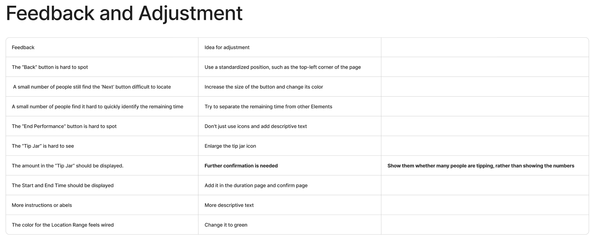
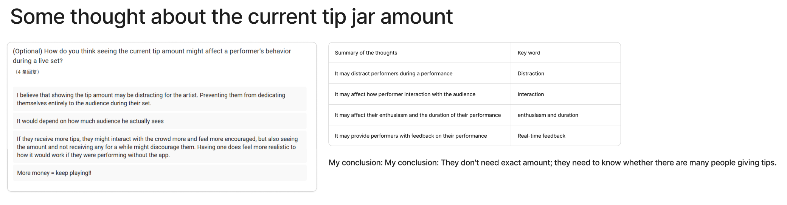
Audience Assumptions
This week, I also began developing user assumptions for the audience side of the app. I currently divide the audience into three main types:
- Spontaneous Explorer
- Music Seeker
- Artist Follower
For each type, I identified their possible goals, motivations, and pain points, and created corresponding personas based on these assumptions. After comparing performers and audience users, I found one important difference between them. Performers usually open the app with a clear goal, such as setting up, publishing, and managing a performance. Because of this, their workflow is more focused and linear. Audience users, however, may not already know what kind of performance they want to find when they open the app. They may simply want to see what is happening nearby, look for a specific type of music, or check whether an artist they follow is currently performing. Because of this, the audience side of the app needs to support more browsing, filtering, comparison, and decision-making.
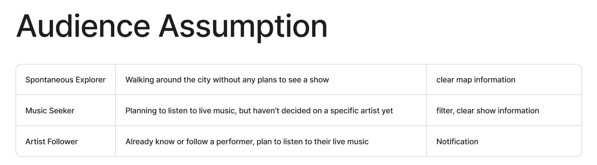
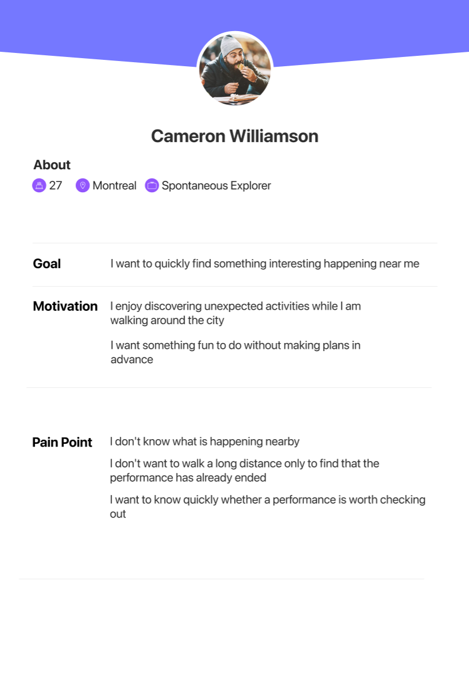
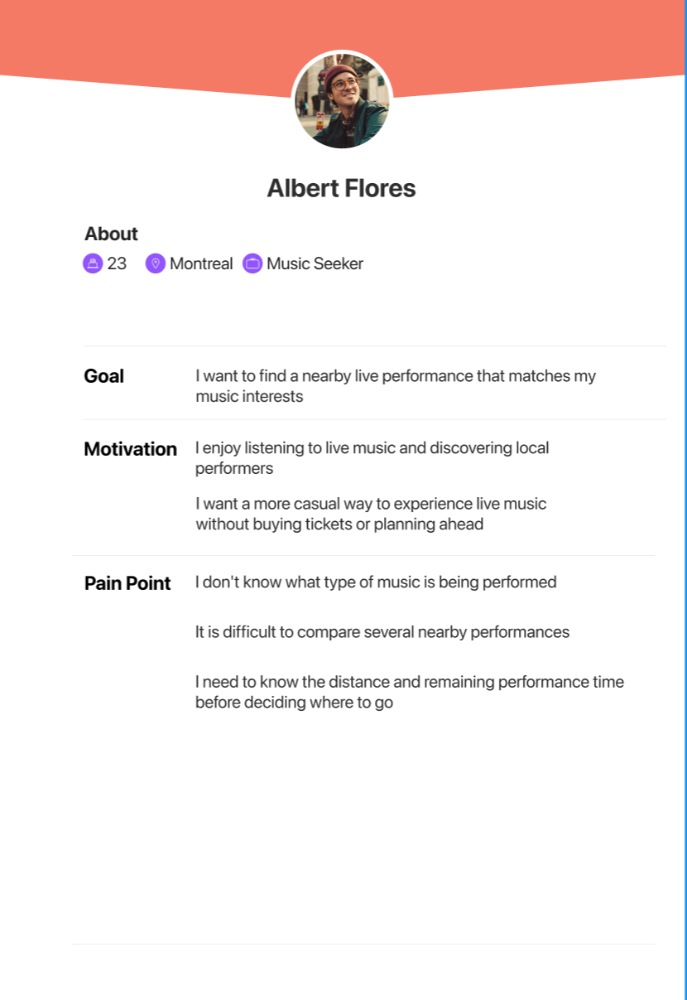
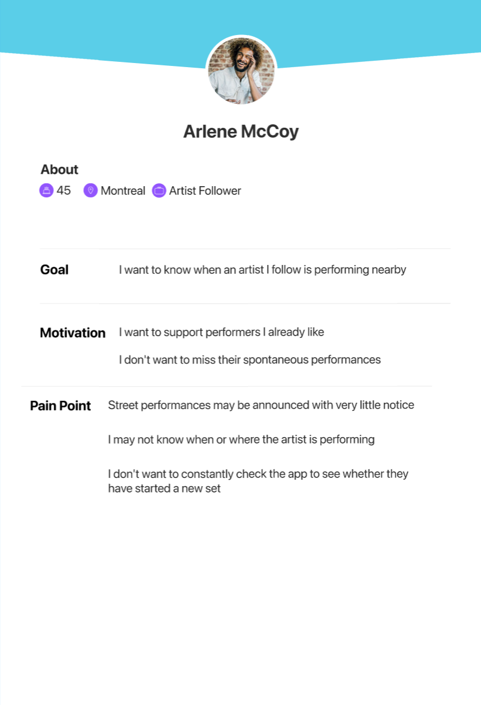
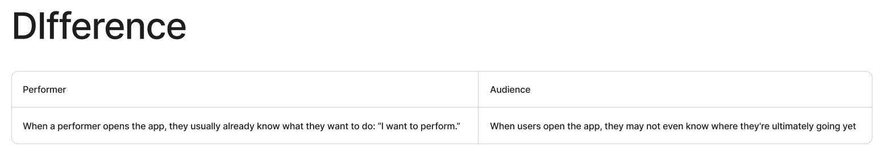
Visual Branding Exploration
This week, I also began exploring the typography, color themes, and iconography for Corner Set. For typography, I first considered the existing logo that was provided for the project. Since the logo uses a bold and condensed sans-serif style, I explored similar typefaces for headings so that the interface could visually connect with the existing logo. For body text and smaller interface text, I focused more on readability and used a more neutral and readable sans-serif style.
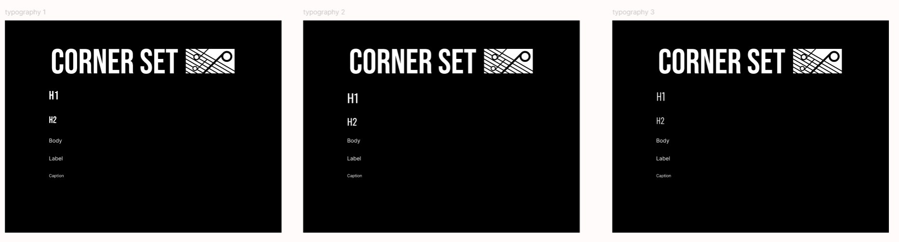
For color, the production team requested an energetic visual tone, so I explored combinations with stronger contrast and more vivid accent colors. I also looked at outdoor music festival posters as visual references for possible color directions. I explored separate Day Mode and Night Mode variations. For Day Mode, my main concern was maintaining readability under bright outdoor lighting, so I used lighter backgrounds with darker text. For Night Mode, in addition to maintaining enough contrast, I also wanted to reduce large bright areas so that the interface would not feel overly harsh when opened in a dark environment.
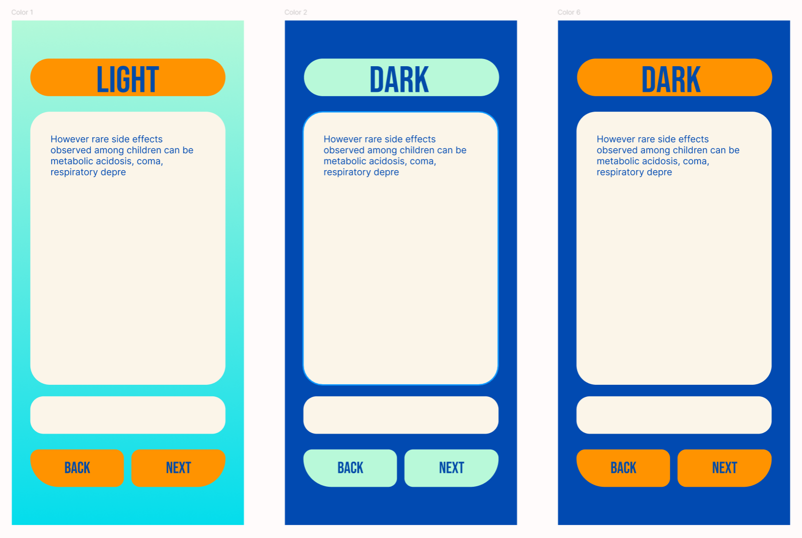
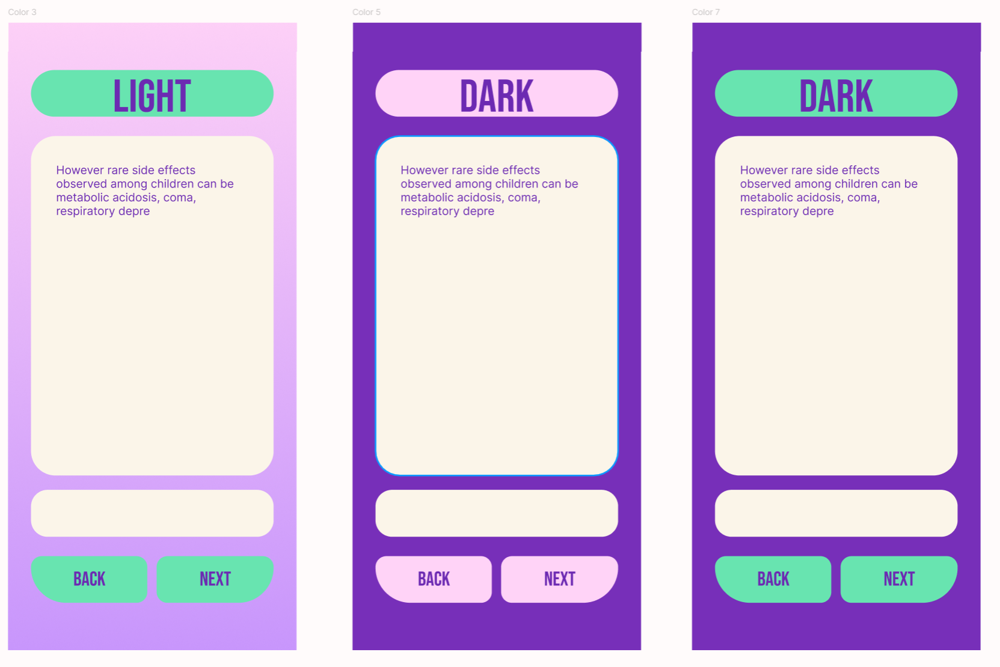
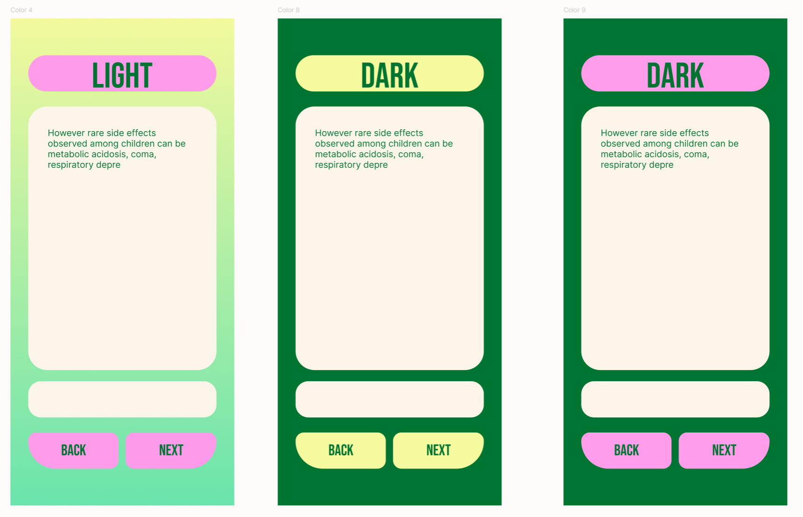
Finally, I created a list of icons that the app may need and collected examples of different icon styles. My current priority is first to make sure that the meaning of each icon is easy to recognize, then to make sure that the icons remain readable at small sizes and under different lighting conditions, and finally to keep the overall icon style visually consistent.
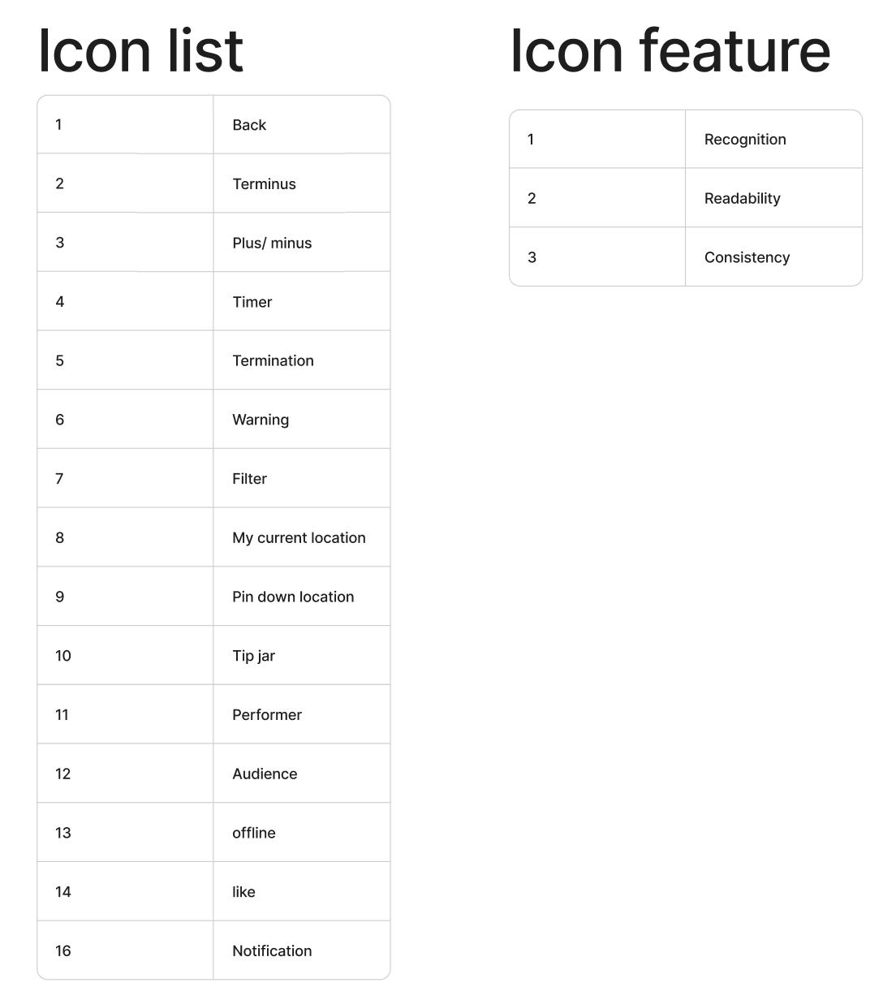
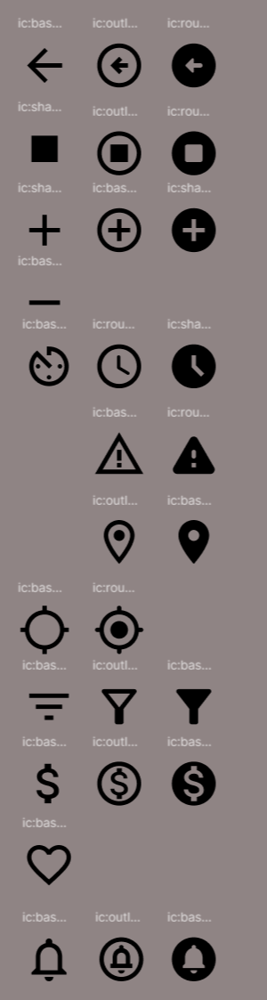